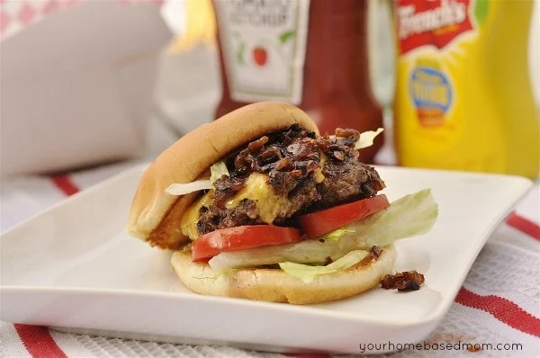
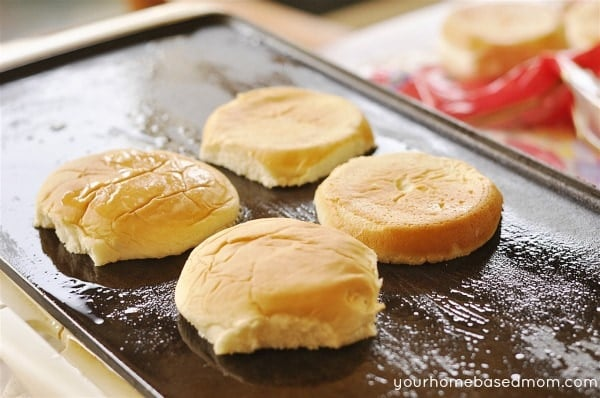
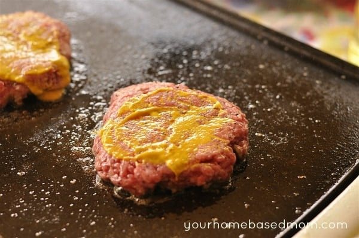

In N Out Burger

Description
Making lasagna can be time-consuming, but the results are well worth the wait.
You'll find a detailed ingredient list and step-by-step instructions in the recipe below, but let's go over the basics.
Hamburger Ingredients
- Hamburger
- Buns
- Cheese
- Lettuce
- Pickles
- Salt and Pepper
- Tomato
- Onions
- Yellow Mustard
Special Sauce Ingredients
- Mayonnaise
- Ketchup
- Sweet Pickle Relish
- White vinegar
How to Carmelize Onions
- Finely chop your onion and add into a frying pan with oil. Stir and saute for a few minutes.
- Cover them and allow them to cook slow for about 30 minutes until they are golden and soft. Watch your heat and don’t let them burn.
- Uncover them once they have started to brown and caramelize and cook for about 5 more minutes uncovered.
- Add in 1/2 C water and simmer until the water evaporates.
Making the burger
- Toast the Buns. This is one of the things I love about an In-N- Out Burger! Heat up your electric griddle and brush it lightly with some vegetable oil. Place your buns split side down on the griddle and toast until golden brown.

- Form your hamburger patties. I made my patties thicker than In-N-Out, but you can make them thinner for a more authentic experience. Add a sprinkle of salt and pepper to both sides.
- Place your patties on your hot griddle (these hamburgers are not put on a BBQ grill)
- Cook for 3-5 minutes, depending on the thickness of your patty and your desired doneness.
- Spread the patty with 1 1/2 tsp of mustard on the uncooked side and then flip
- Top the cooked side with a slice of cheese. In-N-Out uses American cheese but I used a nice slice of cheddar. Again, make it with the cheese you love, or use American for an authentic In-N-Out burger!

- After cooking to your desired doneness you are ready to assemble your burger
- Spread some of the burger sauce on your bun.
- Add lettuce, tomato, hamburger patty and caramelized onions.